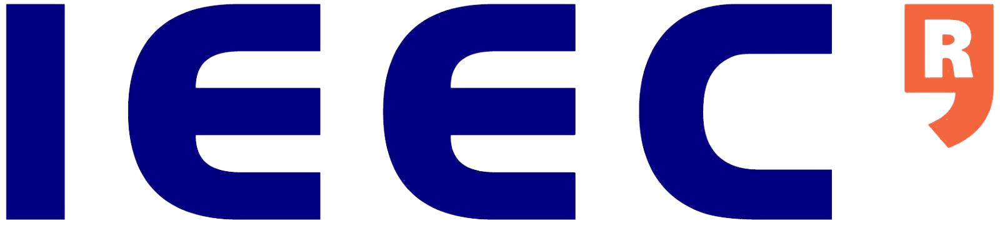

CubeSat Operation Centre / 
Connect to payload
Download capture
Build your own
LED Off
LED Sónar calling
LED Color
LED Text
LED Image
LED Pattern
LED Countdown
Fn1
Fn2
Fn3
Fn4
Establishing telemetry link...
Attitude:
roll
-180.50
deg.
pitch
23.5
deg.
yaw
1.8
deg.
v(x)
-180.50
deg./s
v(y)
23.5
deg./s
v(z)
1.8
deg./s
a(x)
-180.50
m/s²
a(y)
23.5
m/s²
a(z)
1.8
m/s²
Magnetic field:
dir.
-180.50
deg. (N)
x
40.56
µT
y
23.5
µT
z
1.8
µT
Barometric altitude:
P
1060.50
mbar
Alt.
100.5
m
Δ(alt.)
100.5
m
Humidity:
Rel.
50
%
Temperature:
CPU
360.50
ºC
T1
23.5
ºC
T2
1.8
ºC
Institut d'Estudis Espacials de Catalunya (IEEC) /
www.ieec.cat
Video streaming server, interface and scripts credit to Linux Projects /
www.linux-projects.org/uv4l/
. Based on Video For Linux API.